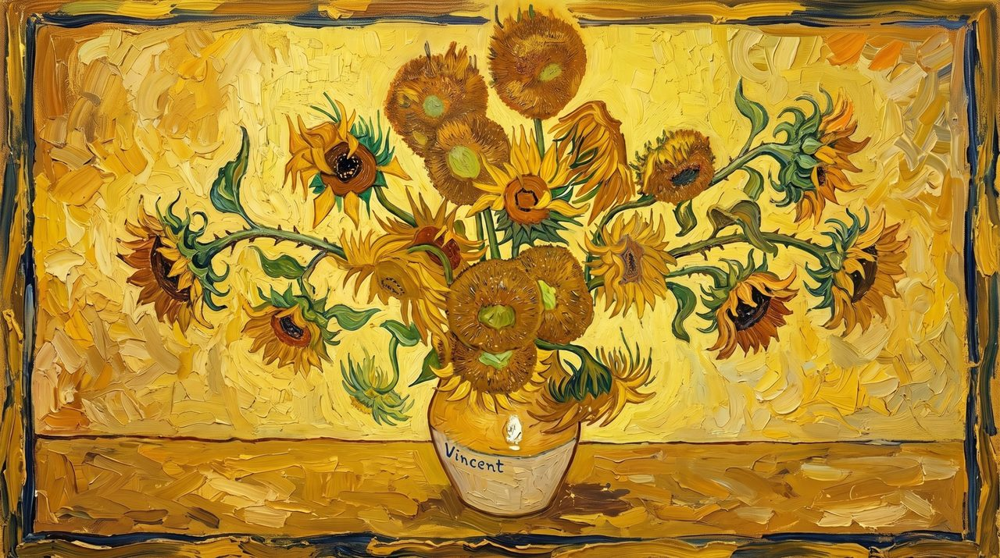

Sunflower Intelligence

Notes on the painting
Van Gogh painted sunflowers again and again in Arles in 1888 and 1889. Four meanings run through those canvases, a fifth comes from the flower itself, and a sixth from how he learned to paint them. Each one became a room, opened by its own flower.
Yellow carried warmth, the southern sun and light itself. He admitted he “had to key myself up a bit to reach the high yellow note”.
Not one of Van Gogh’s meanings but the flower’s own: its seeds pack in spirals whose counts are usually Fibonacci numbers. Usually, not always, which is where analysis begins.
“Jeannin has the peony, Quost has the hollyhock, but I have the sunflower, in a way.” The flower became his signature.
The flowers appear at every stage, from bud to full bloom to “one flower that’s gone to seed and lost its petals”, in the spirit of the Dutch vanitas still life: every season passes.
He began the series in August 1888 to decorate the studio he hoped to share with Paul Gauguin: “Nothing but large Sunflowers.” In 1890 he wrote that the canvases “express an idea symbolizing ‘gratitude’.”
Van Gogh was largely self-taught, working through drawing courses and copying the masters. In 1885 he wrote to the painter Anthon van Rappard: “I keep on making what I can’t do yet in order to learn to be able to do it.”
On the light. Young sunflowers follow the sun from east to west each day. Once they bloom they stop and settle facing east, which warms the flower and brings more bees. The light in this painting makes the same slow walk across the wall, on its own.